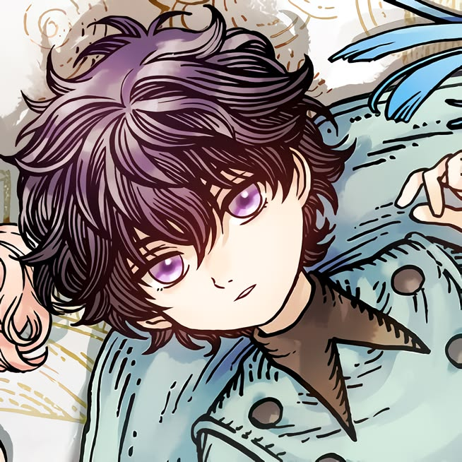
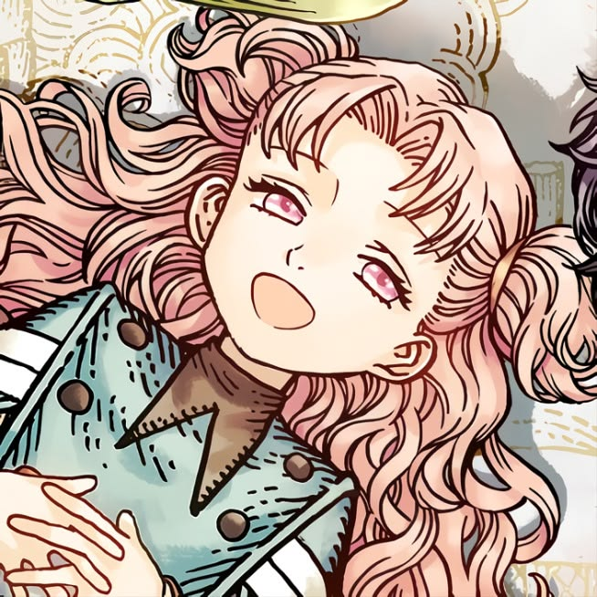
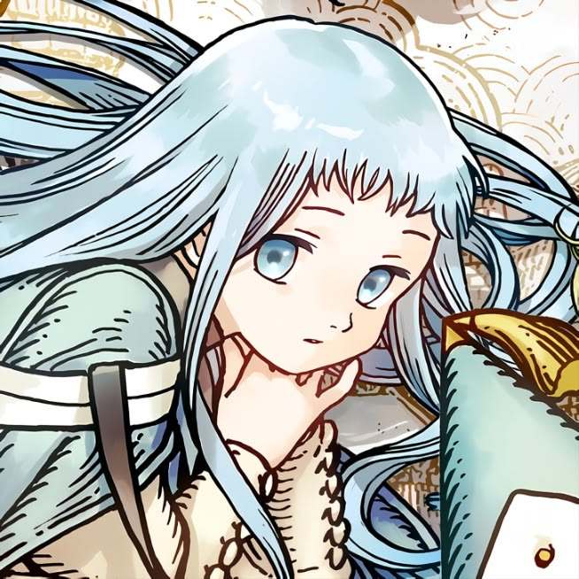
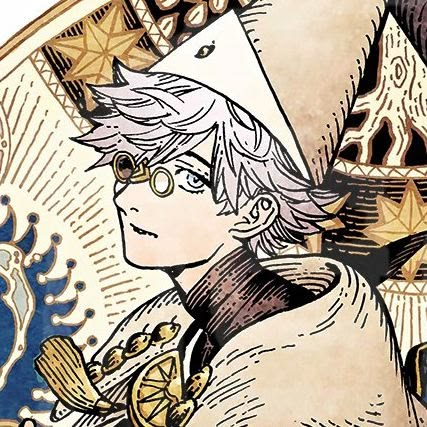
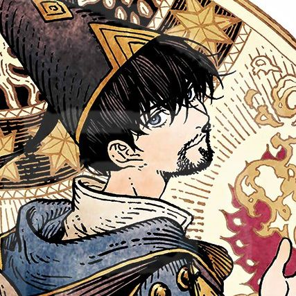
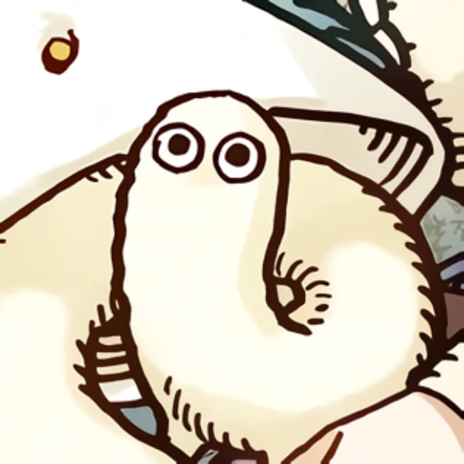

Coco es una joven fascinada por la magia desde pequeña. Su vida cambia cuando descubre accidentalmente el verdadero secreto detrás de los hechizos y comienza su aprendizaje bajo la tutela de Qifrey, tras accidentalmente haber afectado su vida con la magia prohibida.
Agott

Agott es una de las aprendices de Qifrey. Es talentosa, disciplinada y exigente consigo misma. Al principio mantiene una relación complicada con Coco, pero poco a poco comienzan a tener una gran amistad.
Tetia

Tetia es otra de las aprendices de Qifrey. Se caracteriza por tener una personalidad alegre, entusiasta y amigable. Fue la primera aprendiz en hablarle a Coco y ofrecerle su ayuda.
Richeh

Richeh es otra de las aprendices de Qifrey. Tiene una personalidad independiente y creativa, y prefiere experimentar con la magia siguiendo sus propias ideas, siendo muy terca a la hora de aprender nuevos trucos.
Qifrey

Qifrey es un mago y maestro que recibe a Coco como su aprendiz. Es amable y misterioso, y posee sus propios motivos para investigar los secretos de la magia.
Olruggio

Aunque parece brusco y severo, Olruggio es una persona genuinamente amable y cariñosa. Cuida de Qifrey y de los estudiantes del taller, y crea objetos mágicos para ayudarlos.
Gusano Pincel

El aprendiz mas pequeño y útil del Atelier. De la raza de gusados pincel, unos pequeños peludos gusanos que se sienten atraídos a la tinta, ¡así que siempre siguen a los magos!